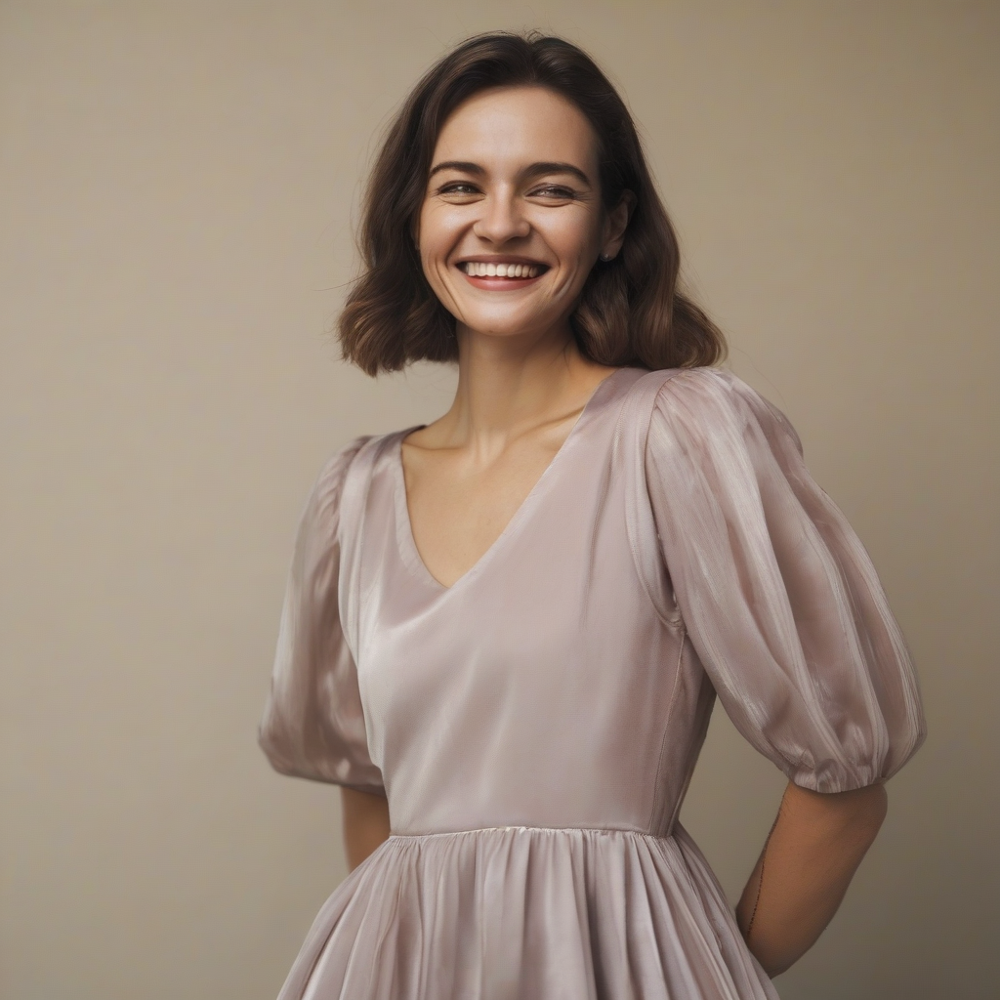
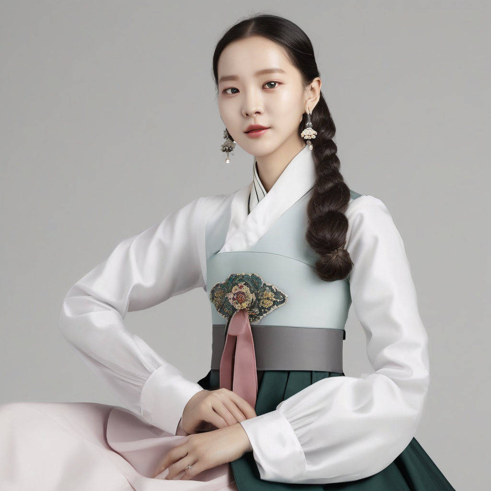
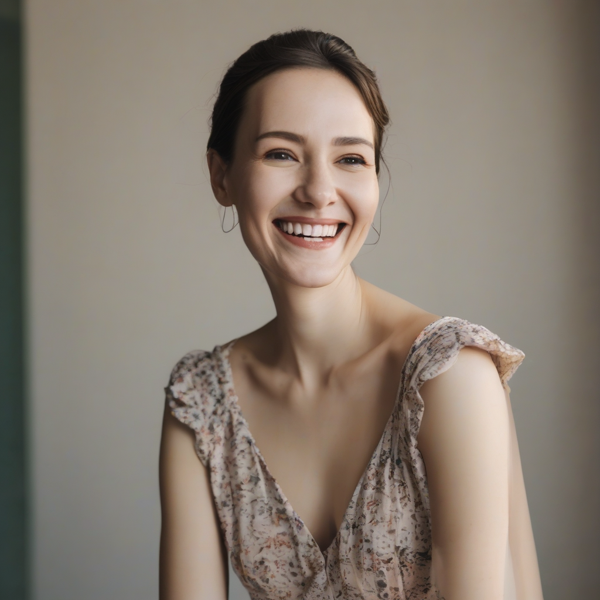
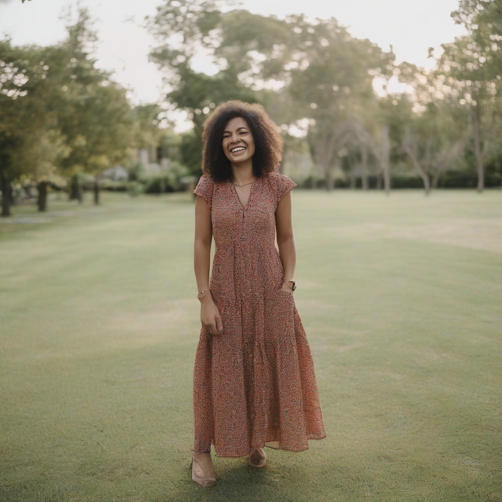
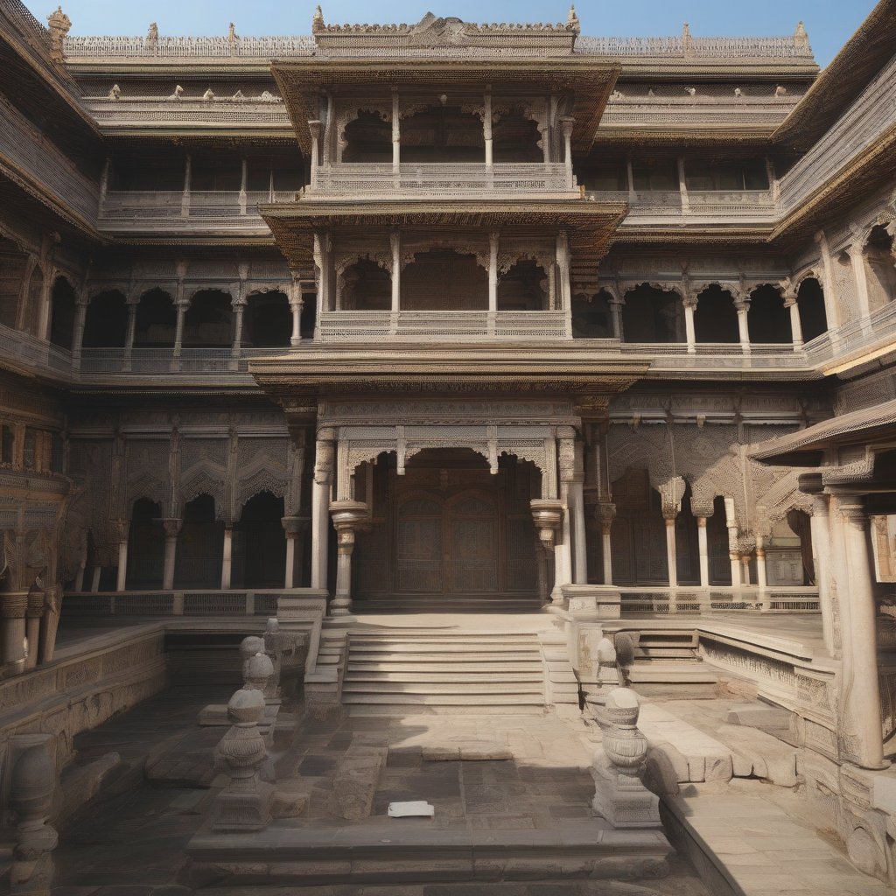

Despite remarkable advances in image generation, existing diffusion models struggle to capture diverse cultural aesthetics. While Low-Rank Adaptation (LoRA) enables efficient fine-tuning, conventional approaches lack semantic awareness. They apply uniform adaptations across all features, leading to suboptimal cultural representation.
To address these limitations, we introduce K-StyleLoRA, a novel framework that leverages CLIP's cross-modal capabilities for cultural image generation. Our approach introduces two key contributions. First, CLIP-Guided Information Gating dynamically modulates LoRA adaptations based on cultural relevance scores, selectively enhancing relevant features while suppressing irrelevant ones. Second, Cultural Semantic Loss provides additional semantic guidance by optimizing CLIP-based similarity to cultural concepts.
Extensive experiments on Korean traditional culture show superior cultural fidelity while maintaining generation quality and diversity. Our framework establishes semantic-aware adaptation as a powerful paradigm for cultural representation. This scalable approach can be extended to diverse cultural contexts and generation tasks beyond Korean aesthetics.
K-StyleLoRA leverages CLIP-Guided Information Gating to dynamically modulate LoRA adaptations based on cultural relevance.

Our method demonstrates superior performance in cultural fidelity while maintaining generation quality and diversity.

Side-by-side comparison demonstrating the superior cultural representation of K-StyleLoRA.






Our work builds on and is inspired by the following excellent works in style transfer and efficient fine-tuning.
LoRA: Low-Rank Adaptation of Large Language Models introduced the efficient fine-tuning paradigm that our work extends to cultural image generation.
CLIP provides the cross-modal semantic guidance at the core of our CLIP-Guided Information Gating mechanism.
Stable Diffusion serves as the base generative model upon which K-StyleLoRA is applied.
@article{lee2025kstylelora,
author={Lee, Soyoung and Cho, Hyoungseo and Kang, Myungjoo and Yoo, YoungJoon},
title = {K-StyleLoRA: Information-Guided Image Generation via Selective Feature Learning},
booktitle={Proceedings of the IEEE/CVF International Conference on Computer Vision (ICCV) Workshops},
year = {2025},
}